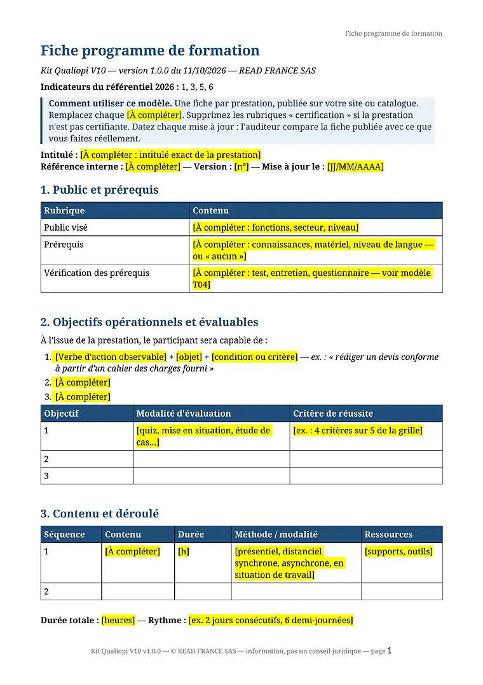
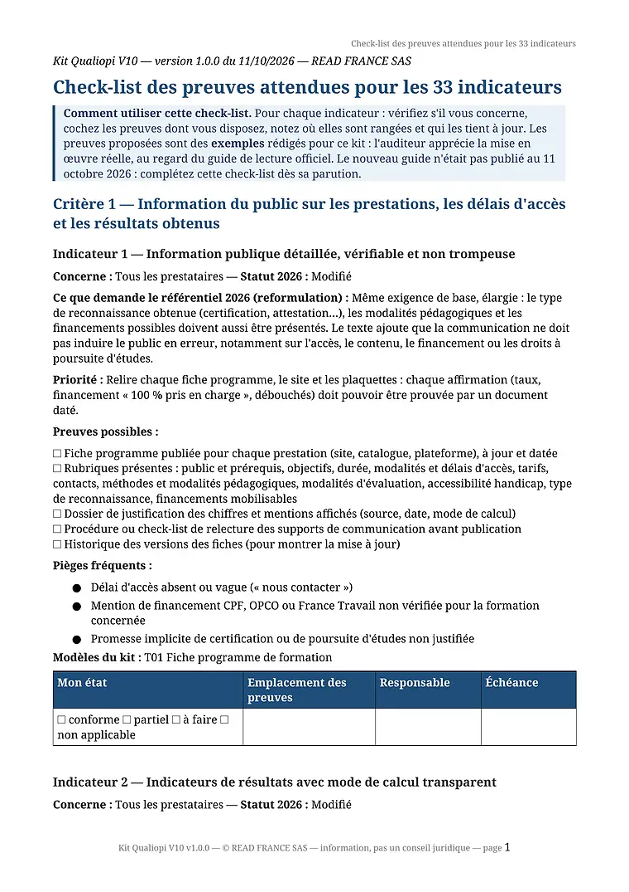
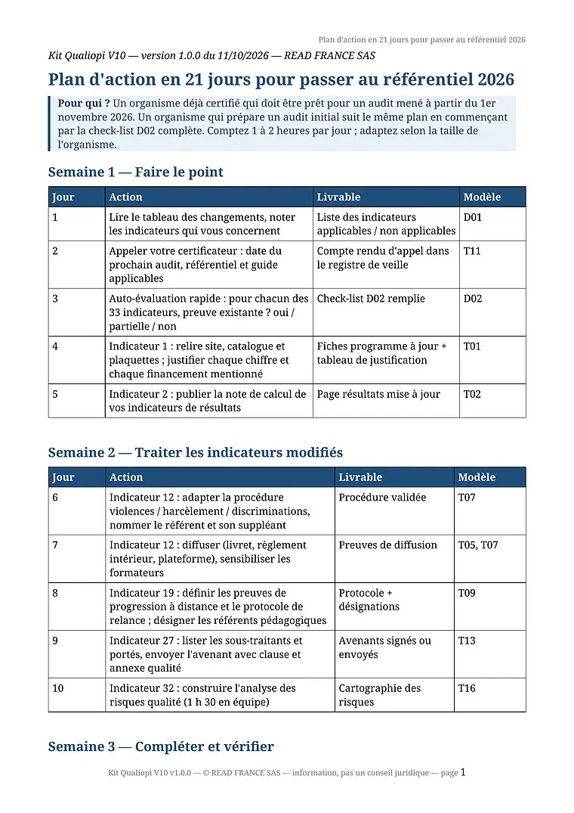
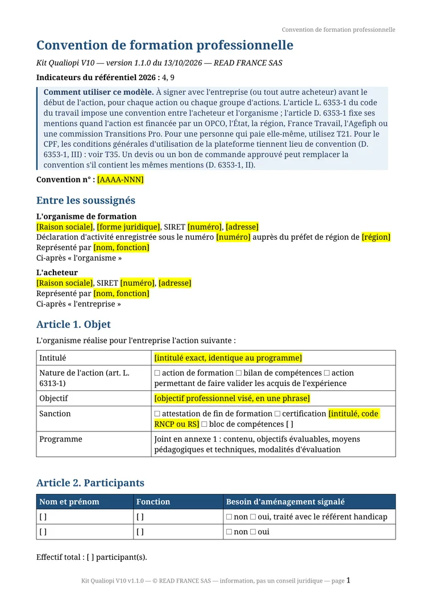
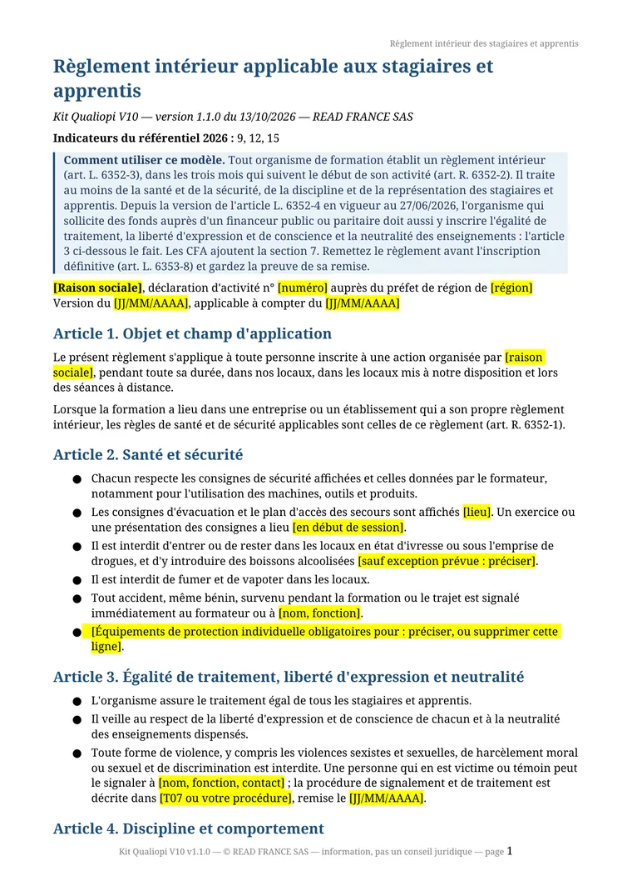
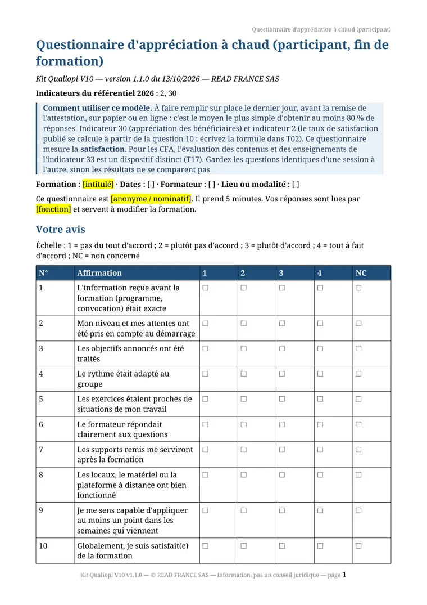

Nouveau référentiel en vigueur le 1er novembre 2026
Kit pour le nouveau référentiel Qualiopi 2026 : les 33 indicateurs, 39 modèles, 129 €
Pour les organismes de formation, CFA et centres de bilans audités après le 1er novembre 2026, sans consultant ni responsable qualité. La check-list des preuves indicateur par indicateur, un plan d'action en 21 jours, 39 modèles Word et LibreOffice et 6 tableurs à remplir avec vos informations.



Vraies pages du kit : check-list des 33 indicateurs, modèles T01 et T07
Ce qui change
Au 1er novembre 2026, 12 indicateurs évoluent
- 33indicateurs, contre 32
- 11modifiés sur le fond
- 1nouveau : l'indicateur 33
- 7critères, inchangés
Guide de lecture officiel du référentiel 2026 : non publié à ce jour (vérifié le 13 octobre 2026). Le kit sera mis à jour à sa parution. Le tableau détaillé, gratuit, donne pour chacun le texte de 2019, celui de 2026 et ce qu'il faut faire.
Ce que vous obtenez
5 synthèses, 39 modèles et 6 tableurs, dont 3 modèles dans l'échantillon gratuit
-
D02 Check-list des preuves, 33 indicateurs
Pour chaque indicateur : à qui il s'applique, ce qui change, les preuves possibles, les pièges fréquents et le modèle à utiliser. -

D04 Plan d'action en 21 jours
Une action par jour, le livrable attendu et le modèle à utiliser, de l'état des lieux à l'audit à blanc. -
T01 Fiche programme de formation
Les rubriques exigées par l'indicateur 1 modifié, avec les zones « À compléter » surlignées. -
T07 Procédure violences et ruptures gratuit
La procédure que l'indicateur 12 modifié demande désormais : qui fait quoi, comment prévenir, comment signaler, comment traiter. -

T20 Convention de formation
Les mentions de l'article D. 6353-1 du code du travail, dont le taux d'heures à distance, avec les zones à compléter surlignées. -

T22 Règlement intérieur
Santé et sécurité, procédure disciplinaire des articles R. 6352-3 à R. 6352-8, et l'égalité de traitement exigée par l'article L. 6352-4. -

T30 Questionnaire à chaud
Dix affirmations notées de 1 à 4, la question qui sert au taux de satisfaction publié et la grille d'exploitation.


5 synthèses (DOCX, ODT, PDF)
- D01 Tableau des changements : référentiel 2019 (« V9 ») → référentiel 2026 (« V10 »)
- D02 Check-list des preuves attendues pour les 33 indicateurs
- D03 Check-list de préparation de l'audit
- D04 Plan d'action en 21 jours pour passer au référentiel 2026
- D05 Index des documents du kit par indicateur
6 tableurs avec formules (Excel et LibreOffice)
- X01 Registre des réclamations, difficultés et aléas · ind. 31, 32
- X02 Plan d'amélioration continue et analyse des risques · ind. 32, 33
- X03 Registre de veille (légale, métiers, pédagogique) · ind. 23, 24, 25
- X04 Matrice des compétences et suivi des intervenants · ind. 18, 21, 22
- X05 Suivi des sous-traitants et salariés portés · ind. 27
- X06 Tableau de suivi des 33 indicateurs, avec taux par critère · les 33 indicateurs
39 modèles éditables (Word et LibreOffice)
Procédures et outils qualité
- T01 Fiche programme de formation · ind. 1, 3, 5, 6
- T02 Tableau des indicateurs de résultats et note de calcul · ind. 2, 3
- T03 Questionnaire d'analyse du besoin · ind. 4
- T04 Positionnement et évaluation des acquis à l'entrée · ind. 8
- T05 Convocation et livret d'accueil · ind. 9, 17
- T06 Suivi individuel et évaluation des acquis · ind. 10, 11
- T07 Procédure de prévention des ruptures et des violences, harcèlement et discriminations · ind. 12, 14 gratuit
- T08 Livret de l'apprenti et liaison centre / entreprise (CFA) · ind. 13, 14, 15
- T09 Ressources pédagogiques, suivi du distanciel et référent pédagogique · ind. 19
- T10 Rôles, compétences et développement des intervenants · ind. 18, 21, 22
- T11 Registre de veille (légale, métiers, pédagogique) · ind. 23, 24, 25
- T12 Procédure d'accueil des personnes en situation de handicap · ind. 26
- T13 Clause et annexe qualité pour la sous-traitance et le portage salarial · ind. 27 gratuit
- T14 Questionnaires d'appréciation des parties prenantes · ind. 30
- T15 Procédure et registre des réclamations, difficultés et aléas · ind. 31
- T16 Plan d'amélioration continue et analyse des risques qualité · ind. 32 gratuit
- T17 Évaluation des contenus et des enseignements par les apprenants · ind. 33
- T18 Dossier certification : correspondance, habilitation, inscription · ind. 3, 7, 16
- T19 Gouvernance, partenaires et insertion (CFA) · ind. 20, 28, 29
Documents administratifs, bilans de compétences, VAE et CFA
- T20 Convention de formation professionnelle · ind. 4, 9
- T21 Contrat de formation (personne qui paie elle-même) · ind. 1, 9
- T22 Règlement intérieur des stagiaires et apprentis · ind. 9, 12, 15
- T23 Convocation à la formation · ind. 9
- T24 Feuille d'émargement par demi-journée (présentiel et distanciel) · ind. 10, 12, 19
- T25 Attestation de fin de formation et d'assiduité · ind. 11
- T26 Certificat de réalisation · ind. 10, 12
- T27 Programme détaillé et déroulé pédagogique · ind. 1, 5, 6, 19
- T28 Livret d'accueil du stagiaire et de l'apprenti · ind. 9, 15, 17, 26
- T29 Test de positionnement : trame, barème et décision · ind. 8
- T30 Questionnaire d'appréciation à chaud (participant) · ind. 2, 30
- T31 Questionnaire d'évaluation à froid (participant) · ind. 2, 30
- T32 Questionnaire d'appréciation du financeur · ind. 30
- T33 Questionnaire d'appréciation de l'entreprise et du tuteur · ind. 4, 13, 30
- T34 Référent handicap : lettre de mission et recueil des besoins · ind. 20, 26
- T35 Formations CPF : check-list et suivi du dossier · ind. 1, 3, 16
- T36 Contrat de sous-traitance d'actions de formation · ind. 21, 27
- T37 Bilan de compétences : convention, confidentialité, synthèse · ind. 4, 9, 11
- T38 Accompagnement VAE : engagement, plan et suivi des délais · ind. 9, 10, 16
- T39 Convention de formation par apprentissage et calendrier d'alternance (CFA) · ind. 13, 15
Pour qui
Pour les structures de 1 à 10 personnes sans responsable qualité
Organismes de formation
Déjà certifiés et audités après le 1er novembre 2026, ou en préparation d'un audit initial.
CFA
Les indicateurs 14, 15 et 20 sont renforcés et l'indicateur 33 est créé. Trois modèles leur sont propres : T08 livret de l'apprenti, T19 gouvernance et partenaires, T17 évaluation des enseignements.
Bilans de compétences et VAE
Les indicateurs communs modifiés (1, 2, 12, 19, 27, 32) vous concernent aussi. La check-list indique ce qui ne s'applique pas à votre activité.
Le kit vous servira peu si un responsable qualité ou un consultant a déjà mis vos procédures à jour du décret n° 2026-728 : le tableau des changements, gratuit, suffira pour vérifier son travail.
Tarif
129 € une fois, pour tout le kit
Pas d'abonnement ni de rendez-vous. Vous remplissez les modèles vous-même ; le plan d'action compte 1 à 2 heures par jour pendant 21 jours.
Kit complet · réservé aux professionnels
129 €
Prix net, TVA non applicable (art. 293 B du CGI)
- Check-list des preuves pour les 33 indicateurs
- Plan d'action en 21 jours et check-list de préparation de l'audit
- Tableau des changements V9 → V10
- 39 modèles éditables, Word et LibreOffice, dont la convention, le règlement intérieur et l'émargement
- 6 tableurs Excel et LibreOffice avec formules, et un index des documents par indicateur
- Mise à jour sans frais après la publication du guide de lecture officiel (si elle paraît dans les 12 mois)
- Utilisable dans tous vos établissements
Paiement par carte (Stripe) · SIREN demandé · facture acquittée par e-mail · CGV professionnels
Fichier illisible, incomplet ou non conforme à la description ? Signalez-le sous 30 jours : nous le remplaçons ou, à défaut, vous remboursons (article 10 des CGV).
Avant d'acheter, l'échantillon gratuit contient le tableau des changements et 3 modèles complets (indicateurs 12, 27 et 32). Sans inscription, sans e-mail.
Télécharger l'échantillon gratuitZIP · DOCX, ODT, PDFIndicateurs 8 et 11 : les questions de vos formations, rédigées pour vous
Les modèles T04, T06 et T29 donnent la trame ; les questions dépendent de vos cours. Avec Acquimètre, vous déposez vos supports et recevez sous 5 jours ouvrés, pour 1 à 10 formations, le test de positionnement, l'évaluation de fin de formation et celle à J+30, avec corrigés et sources. 249 € net, 199 € pour les acheteurs du kit (code dans l'e-mail de livraison).
Questions fréquentes
Avant d'acheter
Combien de temps faut-il pour adapter les modèles ?
Le plan d'action fourni est découpé en 21 jours et compte 1 à 2 heures par jour, à adapter selon la taille de votre organisme. Chaque modèle signale en surligné les zones « [À compléter] » à remplacer par vos informations ; supprimez les rubriques qui ne vous concernent pas.
Puis-je payer sur devis ou par virement ?
Oui. Sur la page Commander, vous payez par carte bancaire (Stripe) ou vous demandez un devis, reçu aussitôt par e-mail en PDF, valable 30 jours, avec l'IBAN et la référence à reporter sur le virement. Le kit et la facture acquittée, établie au nom et au SIREN de votre organisme, partent par e-mail dès réception de l'intégralité du virement (article 5 des CGV professionnels). Pour un bon de commande ou une demande particulière, répondez à l'e-mail du devis ou écrivez à octave@vread.fr.
Et si le guide de lecture officiel change les attendus ?
Le guide de lecture du référentiel 2026 est non publié à ce jour (vérifié le 13 octobre 2026). Une mise à jour du kit établie après sa publication vous est envoyée sans frais, à l'adresse e-mail de commande, si elle paraît dans les 12 mois suivant votre achat (article 10 des CGV professionnels).
Puis-je être remboursé ?
La vente est conclue entre professionnels : le droit de rétractation des consommateurs ne s'applique pas et la commande est ferme dès le paiement (article 7 des CGV professionnels). Si le fichier livré est illisible, incomplet ou ne correspond pas à la description, signalez-le dans les 30 jours : nous fournissons un fichier conforme ou, à défaut, remboursons le prix (article 10). Pour juger la qualité avant d'acheter, téléchargez l'échantillon gratuit.
Qui a rédigé le kit ?
READ FRANCE SAS, société basée à Paris (SIREN 988 741 773), à partir des textes officiels cités en bas de page : décret n° 2026-728, annexe du code du travail, délibération de France compétences. La rédaction est originale ; les libellés des indicateurs sont des reformulations et le texte officiel fait foi. READ FRANCE n'est pas un organisme certificateur. Une question sur le contenu : octave@vread.fr.
Comment se passe la commande ?
Le kit est vendu aux professionnels (SIREN obligatoire), 129 € en achat unique. Sur la page Commander, vous payez par carte ; le fichier ZIP et la facture acquittée arrivent par e-mail dès le paiement confirmé, au plus tard sous 24 heures.
Dans quels formats sont les modèles ?
DOCX (Word) et ODT (LibreOffice), modifiables. Les synthèses sont aussi fournies en PDF. Vous pouvez utiliser les modèles dans tous vos établissements (licence décrite à l'article 8 des CGV).
Quand le nouveau référentiel s'applique-t-il ?
Le décret n° 2026-728 du 1er août 2026 entre en vigueur le 1er novembre 2026. Jusqu'au 31 octobre 2026, le référentiel de 2019 (32 indicateurs) reste applicable. Vérifiez avec votre organisme certificateur quel référentiel et quel guide de lecture seront utilisés pour votre prochain audit.
Qu'est-ce que « Qualiopi V10 » ?
C'est le nom couramment donné au référentiel national qualité modifié par le décret n° 2026-728 du 1er août 2026, publié au Journal officiel du 4 août 2026. Le texte officiel ne parle pas de « V10 » : l'expression fait suite à la version 9 du guide de lecture (8 janvier 2024).
Combien d'indicateurs et qu'est-ce qui change ?
Les 7 critères sont inchangés. Le référentiel passe de 32 à 33 indicateurs : l'indicateur 33 est créé et, selon notre lecture du texte, 11 indicateurs sont modifiés sur le fond (1, 2, 3, 7, 12, 14, 15, 19, 20, 27, 32).
L'indicateur 33 me concerne-t-il ?
L'indicateur 33 (évaluation des contenus et des enseignements par les apprenants) est rattaché aux CFA par les analyses publiées. Vérifiez la colonne d'application dans l'annexe officielle sur Légifrance ; le kit fournit un modèle dédié.
Le guide de lecture officiel est-il publié ?
Non : non publié à ce jour (vérifié le 13 octobre 2026). La page du ministère du Travail propose toujours la version 9 du 8 janvier 2024. Les arrêtés qui fixeront les seuils des indicateurs 19 et 20 n'étaient pas publiés au 11 octobre 2026. Le kit le signale dans chaque document.
Mon certificat en cours reste-t-il valable ?
Le décret ne prévoit pas de disposition transitoire spécifique. Les modalités pour les audits de surveillance et de renouvellement réalisés après le 1er novembre 2026 sont à confirmer avec votre organisme certificateur.
Le kit garantit-il la certification ?
Non. Seul un organisme certificateur décide, après audit. Le kit vous aide à organiser vos preuves ; il ne remplace ni le texte officiel, ni le guide de lecture, ni un conseil juridique ou un accompagnement.
Vous répondez aussi à des marchés publics de formation ? Liste gratuite des appels d’offres de formation ouverts (BOAMP et TED).
Qui sommes-nous
READ FRANCE SAS, Paris
Nous avons écrit ce kit à partir du décret n° 2026-728 et de son annexe, comparés indicateur par indicateur au référentiel de 2019. Le tableau des changements qui en sort est en accès libre depuis le 11 octobre 2026.
-
Tanguy Warsmann
Fondateur & CEO
Formé aux lettres à la Sorbonne puis à emlyon business school, il a travaillé chez Cartier, puis chez AR/Factory, où il a piloté la stratégie de contenus shopping de médias comme Ouest-France, 20 Minutes et Le Figaro.
-
Vincent Cance
Cofondateur & CTO
Développeur full stack web et mobile, il a été cofondateur et CTO de Genipatient, un logiciel de gestion de cabinet pour ostéopathes.
READ FRANCE SAS, SAS au capital de 1 000 € · 11 rue Rouvet, 75019 Paris · SIREN 988 741 773 · mentions légales
Une question avant d'acheter ? Écrivez-nous. Octave, l'assistant IA de READ FRANCE, répond ou transmet votre message à l'un des deux fondateurs.
octave@vread.frSources officielles
- Décret n° 2026-728 du 1er août 2026 relatif au référentiel national sur la qualité des actions concourant au développement des compétences (JORF n° 0180 du 4 août 2026, NOR TRSD2619632D), entrée en vigueur le 1er novembre 2026
- Code du travail, annexe au chapitre VI du titre Ier du livre III de la sixième partie (référentiel issu du décret n° 2019-565 du 6 juin 2019), en vigueur du 1er janvier 2021 au 1er novembre 2026
- Décret n° 2019-565 du 6 juin 2019 relatif au référentiel national sur la qualité des actions concourant au développement des compétences
- Arrêté du 6 juin 2019 relatif aux modalités d'audit associées au référentiel national (article D. 6316-1-1 du code du travail), modifié
- France compétences, délibération du conseil d'administration n° 2026-07-26 (avis favorable sur le projet de décret, 15 juillet 2026)
Contenu vérifié le 11 octobre 2026 ; statut du guide de lecture vérifié le 12 octobre 2026.